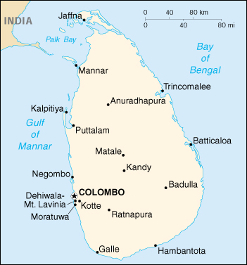

|
Sri Lanka | |
| Introduction Geography People Government Economy Communications Transportation Military Transnational Issues | ||
|  | ||
| Sri Lanka | Introduction | Top of Page |
| Background: | Occupied by the Portuguese in the 16th century and the Dutch in the 17th century, the island was ceded to the British in 1802. As Ceylon it became independent in 1948; its name was changed in 1972. Tensions between the Sinhalese majority and Tamil separatists erupted in violence in the mid-1980s. Tens of thousands have died in an ethnic war that continues to fester. |
| Sri Lanka | Geography | Top of Page |
| Location: | Southern Asia, island in the Indian Ocean, south of India |
| Geographic coordinates: | 7 00 N, 81 00 E |
| Map references: | Asia |
| Area: |
total:
65,610 sq km
land: 64,740 sq km water: 870 sq km |
| Area - comparative: | slightly larger than West Virginia |
| Land boundaries: | 0 km |
| Coastline: | 1,340 km |
| Maritime claims: |
contiguous zone:
24 NM
continental shelf: 200 NM or to the edge of the continental margin exclusive economic zone: 200 NM territorial sea: 12 NM |
| Climate: | tropical monsoon; northeast monsoon (December to March); southwest monsoon (June to October) |
| Terrain: | mostly low, flat to rolling plain; mountains in south-central interior |
| Elevation extremes: |
lowest point:
Indian Ocean 0 m
highest point: Pidurutalagala 2,524 m |
| Natural resources: | limestone, graphite, mineral sands, gems, phosphates, clay, hydropower |
| Land use: |
arable land:
14%
permanent crops: 15% permanent pastures: 7% forests and woodland: 32% other: 32% (1993 est.) |
| Irrigated land: | 5,500 sq km (1993 est.) |
| Natural hazards: | occasional cyclones and tornadoes |
| Environment - current issues: | deforestation; soil erosion; wildlife populations threatened by poaching and urbanization; coastal degradation from mining activities and increased pollution; freshwater resources being polluted by industrial wastes and sewage runoff; waste disposal; air pollution in Colombo |
| Environment - international agreements: |
party to:
Biodiversity, Climate Change, Desertification, Endangered Species, Environmental Modification, Hazardous Wastes, Law of the Sea, Nuclear Test Ban, Ozone Layer Protection, Ship Pollution, Wetlands
signed, but not ratified: Marine Life Conservation |
| Geography - note: | strategic location near major Indian Ocean sea lanes |
| Sri Lanka | People | Top of Page |
| Population: |
19,408,635 (July 2001 est.)
note: since the outbreak of hostilities between the government and armed Tamil separatists in the mid-1980s, several hundred thousand Tamil civilians have fled the island; as of mid-1999, approximately 66,000 were housed in 133 refugee camps in south India, another 40,000 lived outside the Indian camps, and more than 200,000 Tamils have sought refuge in the West |
| Age structure: |
0-14 years:
25.99% (male 2,578,618; female 2,464,928)
15-64 years: 67.39% (male 6,369,881; female 6,708,852) 65 years and over: 6.62% (male 615,253; female 671,103) (2001 est.) |
| Population growth rate: | 0.87% (2001 est.) |
| Birth rate: | 16.58 births/1,000 population (2001 est.) |
| Death rate: | 6.43 deaths/1,000 population (2001 est.) |
| Net migration rate: | -1.43 migrant(s)/1,000 population (2001 est.) |
| Sex ratio: |
at birth:
1.05 male(s)/female
under 15 years: 1.05 male(s)/female 15-64 years: 0.95 male(s)/female 65 years and over: 0.92 male(s)/female total population: 0.97 male(s)/female (2001 est.) |
| Infant mortality rate: | 16.08 deaths/1,000 live births (2001 est.) |
| Life expectancy at birth: |
total population:
72.09 years
male: 69.58 years female: 74.73 years (2001 est.) |
| Total fertility rate: | 1.95 children born/woman (2001 est.) |
| HIV/AIDS - adult prevalence rate: | 0.07% (1999 est.) |
| HIV/AIDS - people living with HIV/AIDS: | 7,500 (1999 est.) |
| HIV/AIDS - deaths: | 490 (1999 est.) |
| Nationality: |
noun:
Sri Lankan(s)
adjective: Sri Lankan |
| Ethnic groups: | Sinhalese 74%, Tamil 18%, Moor 7%, Burgher, Malay, and Vedda 1% |
| Religions: | Buddhist 70%, Hindu 15%, Christian 8%, Muslim 7% (1999) |
| Languages: |
Sinhala (official and national language) 74%, Tamil (national language) 18%, other 8%
note: English is commonly used in government and is spoken competently by about 10% of the population |
| Literacy: |
definition:
age 15 and over can read and write
total population: 90.2% male: 93.4% female: 87.2% (1995 est.) |
| Sri Lanka | Government | Top of Page |
| Country name: |
conventional long form:
Democratic Socialist Republic of Sri Lanka
conventional short form: Sri Lanka former: Serendib, Ceylon |
| Government type: | republic |
| Capital: | Colombo; note - Sri Jayewardenepura Kotte is the legislative capital |
| Administrative divisions: | 8 provinces; Central, North Central, North Eastern, North Western, Sabaragamuwa, Southern, Uva, Western; note - North Eastern province may have been divided in two - Northern and Eastern |
| Independence: | 4 February 1948 (from UK) |
| National holiday: | Independence Day, 4 February (1948) |
| Constitution: | adopted 16 August 1978 |
| Legal system: | a highly complex mixture of English common law, Roman-Dutch, Muslim, Sinhalese, and customary law; has not accepted compulsory ICJ jurisdiction |
| Suffrage: | 18 years of age; universal |
| Executive branch: |
chief of state:
President Chandrika Bandaranaike KUMARATUNGA (since 12 November 1994); note - Ratnasiri WICKRAMANAYAKE (since 10 August 2000) is the prime minister; in Sri Lanka the president is considered to be both the chief of state and the head of the government, this is in contrast to the more common practice of dividing the roles between the president and the prime minister when both offices exist
head of government: President Chandrika Bandaranaike KUMARATUNGA (since 12 November 1994); note - Ratnasiri WICKRAMANAYAKE (since 10 August 2000) is the prime minister; in Sri Lanka the president is considered to be both the chief of state and the head of the government, this is in contrast to the more common practice of dividing the roles between the president and the prime minister when both offices exist cabinet: Cabinet appointed by the president in consultation with the prime minister elections: president elected by popular vote for a six-year term; election last held 21 December 1999 (next to be held NA December 2005) election results: Chandrika Bandaranaike KUMARATUNGA reelected president; percent of vote - Chandrika Bandaranaike KUMARATUNGA (PA) 51%, Ranil WICKREMASINGHE (UNP) 42%, other 7% |
| Legislative branch: |
unicameral Parliament (225 seats; members elected by popular vote on the basis of a modified proportional representation system by district to serve six-year terms)
elections: last held 10 October 2000 (next to be held NA October 2006) election results: percent of vote by party - PA 45.11%, UNP 40.22%, JVP 6%, NUA 2.29%, SU 1.48%, TULF 1.23%, other 3.67%; seats by party - PA 107, UNP 89, JVP 10, TULF 5, EPDP 4, NUA 4, TELO 3, ACTC 1, SU 1, independent 1 |
| Judicial branch: | Supreme Court; Court of Appeals; judges for both courts are appointed by the president |
| Political parties and leaders: | All Ceylon Tamil Congress or ACTC [Nalliah GURUPAUAN]; Ceylon Workers Congress or CLDC [Arumugam THONDAMAN]; Communist Party [Raja COLLURE]; Democratic United National (Lalith) Front or DUNLF [Srimani ATHULATHMUDALI]; Eelam People's Democratic Party or EPDP [Douglas DEVANANDA]; Eelam People's Revolutionary Liberation Front or EPRLF [Suresh PREMACHANDRA]; Janatha Vimukthi Peramuna or JVP [Tilvan SILVA]; National Unity Alliance or NUA [leader NA]; People's Alliance or PA [Chandrika Bandaranaike KUMARATUNGA]; People's Liberation Organization of Tamil Eelam or PLOTE [D. SIDDATHAN]; Sihala Urumaya or SU [leader NA]; Sri Lanka Freedom Party or SLFP [Chandrika Bandaranaike KUMARATUNGA]; Sri Lanka Muslim Congress or SLMC [Rauff HAKEEM and Ferial ASHRAFF]; Sri Lanka Progressive Front or SLPF [leader NA]; Tamil Eelam Liberation Organization or TELO [SUBRAMANIUM]; Tamil United Liberation Front or TULF [R. SAMPATHAN]; United National Party or UNP [Ranil WICKREMASINGHE]; Upcountry People's Front or UPF [P. CHANDRASEKARAN]; several ethnic Tamil and Muslim parties, represented in either parliament or provincial councils |
| Political pressure groups and leaders: | Buddhist clergy; labor unions; Liberation Tigers of Tamil Eelam or LTTE (insurgent group fighting for a separate state); radical chauvinist Sinhalese groups such as the National Movement Against Terrorism; Sinhalese Buddhist lay groups |
| International organization participation: | AsDB, C, CCC, CP, ESCAP, FAO, G-24, G-77, IAEA, IBRD, ICAO, ICC, ICFTU, ICRM, IDA, IFAD, IFC, IFRCS, IHO, ILO, IMF, IMO, Inmarsat, Intelsat, Interpol, IOC, IOM, ISO, ITU, NAM, OAS (observer), OPCW, PCA, SAARC, UN, UNCTAD, UNESCO, UNIDO, UNTAET, UNU, UPU, WCL, WFTU, WHO, WIPO, WMO, WToO, WTrO |
| Diplomatic representation in the US: |
chief of mission:
Ambassador Warnasena RASAPUTRAM
chancery: 2148 Wyoming Avenue NW, Washington, DC 20008 telephone: [1] (202) 483-4025 (through 4028) FAX: [1] (202) 232-7181 consulate(s) general: Los Angeles consulate(s): New York |
| Diplomatic representation from the US: |
chief of mission:
Ambassador E. Ashley WILLS
embassy: 210 Galle Road, Colombo 3 mailing address: P. O. Box 106, Colombo telephone: [94] (1) 448007 FAX: [94] (1) 437345 |
| Flag description: | yellow with two panels; the smaller hoist-side panel has two equal vertical bands of green (hoist side) and orange; the other panel is a large dark red rectangle with a yellow lion holding a sword, and there is a yellow bo leaf in each corner; the yellow field appears as a border that goes around the entire flag and extends between the two panels |
| Sri Lanka | Economy | Top of Page |
| Economy - overview: | In 1977, Colombo abandoned statist economic policies and its import substitution trade policy for market-oriented policies and export-oriented trade. Sri Lanka's most dynamic sectors now are food processing, textiles and apparel, food and beverages, telecommunications, and insurance and banking. By 1996 plantation crops made up only 20% of exports (compared with 93% in 1970), while textiles and garments accounted for 63%. GDP grew at an annual average rate of 5.5% throughout the 1990s until a drought and a deteriorating security situation lowered growth to 3.8% in 1996. The economy rebounded in 1997-98 with growth of 6.4% and 4.7% - but slowed to 4.3% in 1999. Growth increased to 5.6% in 2000, with growth in tourism and exports leading the way. But a resurgence of civil war between the Sinhalese and the minority Tamils and a possible slowdown in tourism dampen prospects for 2001. For the next round of reforms, the central bank of Sri Lanka recommends that Colombo expand market mechanisms in nonplantation agriculture, dismantle the government's monopoly on wheat imports, and promote more competition in the financial sector. |
| GDP: | purchasing power parity - $62.7 billion (2000 est.) |
| GDP - real growth rate: | 5.6% (2000 est.) |
| GDP - per capita: | purchasing power parity - $3,250 (2000 est.) |
| GDP - composition by sector: |
agriculture:
21%
industry: 19% services: 60% (1998) |
| Population below poverty line: | 22% (1997 est.) |
| Household income or consumption by percentage share: |
lowest 10%:
1.8%
highest 10%: 39.7% (1995-96 est.) |
| Inflation rate (consumer prices): | 8.5% (2000 est.) |
| Labor force: | 6.6 million (1998) |
| Labor force - by occupation: | services 45%, agriculture 38%, industry 17% (1998 est.) |
| Unemployment rate: | 8.8% (1999 est.) |
| Budget: |
revenues:
$3 billion
expenditures: $3 billion, including capital expenditures of $NA (2000 est.) |
| Industries: | processing of rubber, tea, coconuts, and other agricultural commodities; clothing, cement, petroleum refining, textiles, tobacco |
| Industrial production growth rate: | 4% (1999) |
| Electricity - production: | 6.026 billion kWh (1999) |
| Electricity - production by source: |
fossil fuel:
29.9%
hydro: 70.1% nuclear: 0% other: 0% (1999) |
| Electricity - consumption: | 5.604 billion kWh (1999) |
| Electricity - exports: | 0 kWh (1999) |
| Electricity - imports: | 0 kWh (1999) |
| Agriculture - products: | rice, sugarcane, grains, pulses, oilseed, spices, tea, rubber, coconuts; milk, eggs, hides, beef |
| Exports: | $5.2 billion (f.o.b., 2000) |
| Exports - commodities: | textiles and apparel, tea, diamonds, coconut products, petroleum products |
| Exports - partners: | US 39%, UK 13%, Middle East 8%, Germany 5%, Japan 4% (1999) |
| Imports: | $6.1 billion (f.o.b., 2000) |
| Imports - commodities: | machinery and equipment, textiles, petroleum, foodstuffs |
| Imports - partners: | Japan 10%, India 9%, Hong Kong 8%, Singapore 8%, South Korea 6% (1999) |
| Debt - external: | $9.9 billion (2000) |
| Economic aid - recipient: | $577 million (1998) |
| Currency: | Sri Lankan rupee (LKR) |
| Currency code: | LKR |
| Exchange rates: | Sri Lankan rupees per US dollar - 83.506 (January 2001), 77.005 (2000), 70.635 (1999), 64.450 (1998), 58.995 (1997), 55.271 (1996) |
| Fiscal year: | calendar year |
| Sri Lanka | Communications | Top of Page |
| Telephones - main lines in use: | 494,509 (1998) |
| Telephones - mobile cellular: | 228,604 (1999) |
| Telephone system: |
general assessment:
very inadequate domestic service, particularly in rural areas; some hope for improvement with privatization of national telephone company and encouragement to private investment; good international service (1999)
domestic: national trunk network consists mostly of digital microwave radio relay; fiber-optic links now in use in Colombo area and two fixed wireless local loops have been installed; competition is strong in mobile cellular systems; telephone density remains low at 2.6 main lines per 100 persons (1999) international: submarine cables to Indonesia and Djibouti; satellite earth stations - 2 Intelsat (Indian Ocean) (1999) |
| Radio broadcast stations: | AM 26, FM 45, shortwave 1 (1998) |
| Radios: | 3.85 million (1997) |
| Television broadcast stations: | 21 (1997) |
| Televisions: | 1.53 million (1997) |
| Internet country code: | .lk |
| Internet Service Providers (ISPs): | 5 (2000) |
| Internet users: | 65,000 (2000) |
| Sri Lanka | Transportation | Top of Page |
| Railways: |
total:
1,463 km
broad gauge: 1,404 km 1.676-m gauge narrow gauge: 59 km 0.762-m gauge (1996) |
| Highways: |
total:
11,285 km
paved: 10,721 km unpaved: 564 km (1998 est.) |
| Waterways: | 430 km (navigable by shallow-draft craft) |
| Pipelines: | crude oil and petroleum products 62 km (1987) |
| Ports and harbors: | Colombo, Galle, Jaffna, Trincomalee |
| Merchant marine: |
total:
20 ships (1,000 GRT or over) totaling 149,902 GRT/247,852 DWT
ships by type: bulk 1, cargo 16, container 1, petroleum tanker 1, refrigerated cargo 1 (2000 est.) |
| Airports: | 14 (2000 est.) |
| Airports - with paved runways: |
total:
12
over 3,047 m: 1 1,524 to 2,437 m: 5 914 to 1,523 m: 6 (2000 est.) |
| Airports - with unpaved runways: |
total:
2
1,524 to 2,437 m: 1 under 914 m: 1 (2000 est.) |
| Sri Lanka | Military | Top of Page |
| Military branches: | Army, Navy, Air Force, Police Force |
| Military manpower - military age: | 18 years of age |
| Military manpower - availability: | males age 15-49: 5,304,323 (2001 est.) |
| Military manpower - fit for military service: | males age 15-49: 4,119,511 (2001 est.) |
| Military manpower - reaching military age annually: | males: 193,522 (2001 est.) |
| Military expenditures - dollar figure: | $719 million (FY98) |
| Military expenditures - percent of GDP: | 4.2% (FY98) |
| Sri Lanka | Transnational Issues | Top of Page |
| Disputes - international: | none |
{kind=link}
{kind=link}